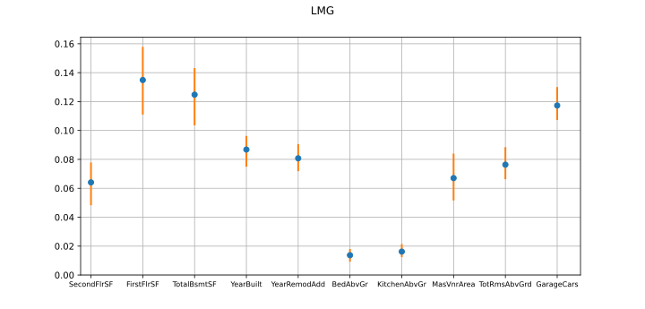
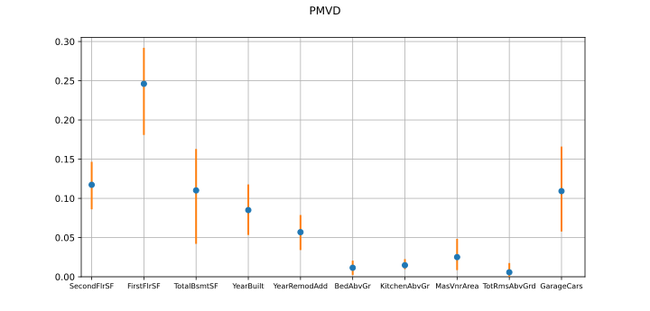
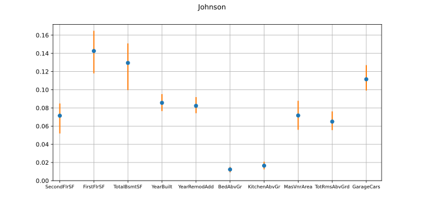
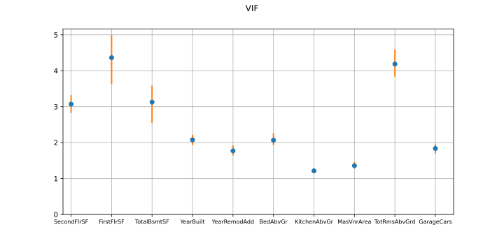

Note
Go to the end to download the full example code.
Compute sensitivity indices in a multicollinear context¶
Introduction¶
In this example, we are interested in the computation of several quantities that are relevant when predictors are correlated:
LMG index
PMVD index
Johnson index
VIF metric
We will use the CorrelationAnalysis class.
import openturns as ot
import openturns.viewer as otv
import openturns.experimental as otexp
from openturns.usecases import ames_housing
We will take the X and Y samples from the Ames Housing dataset (which contains data about houses in the city of Ames):
We fit a linear regression model to predict Y, e.g. sale prices from the other features, and we compute the R² score to check that the model is relevant:
regression = ot.LinearModelAlgorithm(X, Y).getResult()
r2 = otexp.LinearModelValidation(regression).computeR2Score()
print(f"R² score: {r2[0]}")
R² score: 0.769015029664734
The R² score is relatively close to 1, which means that the linear regression model is relevant. We can now compute the LMG and PMVD indices, the Johnson index and the VIF metric.
We will also perform bootstraps and plot the results, so we start by defining some helper functions. First, we define one that computes the desired quantity:
def compute_collinearity_metric(X, Y, kind):
"""
Compute a quantity for the given dataset
Parameters
- X: the input sample
- Y: the output sample
- kind: the type of quantity to compute ("LMG_PMVD", "Johnson" or "VIF")
"""
analysis = ot.CorrelationAnalysis(X, Y)
if kind == "LMG_PMVD":
return analysis.computeLMGAndPMVD()
elif kind == "Johnson":
return analysis.computeJohnson()
elif kind == "VIF":
return ot.CorrelationAnalysis.ComputeVIF(X)
else:
raise Exception(f"Invalid kind: {kind}")
Then we add a function that builds a graph:
def create_graph(title, names, mean, interval):
dimension = mean.getDimension()
palette = ot.Drawable.BuildDefaultPalette(2)
graph = ot.Graph(title, "", "")
# Confidence bounds
lb = interval.getLowerBound()
ub = interval.getUpperBound()
for i in range(dimension):
curve = ot.Curve([1 + i, 1 + i], [lb[i], ub[i]])
curve.setLineWidth(2.0)
curve.setColor(palette[1])
graph.add(curve)
# Means
data = ot.Sample(0, 2)
for i in range(dimension):
data.add([i + 1, mean[i]])
cloud = ot.Cloud(data, palette[0], "circle")
graph.add(cloud)
box = graph.getBoundingBox()
box.setLowerBound([0.8, 0.0])
graph.setBoundingBox(box)
axes_kw = {"xticks": range(1, dimension + 1), "xticklabels": names}
view = otv.View(graph, axes_kw=axes_kw, figure_kw={"figsize": (10.0, 4.8)})
view.getAxes()[0].tick_params(
axis="x", labelsize=8.0
) # reduce the font size of the X labels
And finally, a function that performs a bootstrap and creates a graph with the results:
def bootstrap(X, Y, kind, alpha=0.95, bootstrap_size=100):
"""
Perform a bootstrap on the provided sample and create a graph with the means and confidence intervals
Parameters
- X: the input sample
- Y: the output sample
- kind: the type of quantity to compute ("LMG_PMVD", "Johnson" or "VIF")
- alpha: the confidence level
- bootstrap_size: the number of points in the experiment
"""
# Perform a bootstrap
sample_size = X.getSize()
boot = ot.Sample(bootstrap_size, X.getDimension())
if kind == "LMG_PMVD":
boot_pmvd = ot.Sample(bootstrap_size, X.getDimension())
for i in range(bootstrap_size):
selection = ot.BootstrapExperiment.GenerateSelection(sample_size, sample_size)
X_boot = X[selection]
Y_boot = Y[selection]
if kind == "LMG_PMVD":
boot[i, :], boot_pmvd[i, :] = compute_collinearity_metric(
X_boot, Y_boot, kind
)
else:
boot[i, :] = compute_collinearity_metric(X_boot, Y_boot, kind)
# Create a graph with the mean values and confidence intervals computed from the bootstrap
mean = boot.computeMean()
lb = boot.computeQuantilePerComponent((1.0 - alpha) / 2.0)
ub = boot.computeQuantilePerComponent(1.0 - (1.0 - alpha) / 2.0)
interval = ot.Interval(lb, ub)
if kind == "LMG_PMVD":
create_graph("LMG", X.getDescription(), mean, interval)
pmvd_mean = boot_pmvd.computeMean()
pmvd_lb = boot_pmvd.computeQuantilePerComponent((1.0 - alpha) / 2.0)
pmvd_ub = boot_pmvd.computeQuantilePerComponent(1.0 - (1.0 - alpha) / 2.0)
pmvd_interval = ot.Interval(pmvd_lb, pmvd_ub)
create_graph("PMVD", X.getDescription(), pmvd_mean, pmvd_interval)
else:
create_graph(kind, X.getDescription(), mean, interval)
LMG and PMVD indices:
analysis = ot.CorrelationAnalysis(X, Y)
lmg, pmvd = analysis.computeLMGAndPMVD()
print("LMG indices: ", lmg)
print("PMVD indices: ", pmvd)
LMG indices: [SecondFlrSF : 0.0630769, FirstFlrSF : 0.133402, TotalBsmtSF : 0.122827, YearBuilt : 0.0860022, YearRemodAdd : 0.0808751, BedAbvGr : 0.01342, KitchenAbvGr : 0.0159831, MasVnrArea : 0.0672711, TotRmsAbvGrd : 0.0764999, GarageCars : 0.117636]
PMVD indices: [SecondFlrSF : 0.115386, FirstFlrSF : 0.245116, TotalBsmtSF : 0.10491, YearBuilt : 0.0838097, YearRemodAdd : 0.0582368, BedAbvGr : 0.0107528, KitchenAbvGr : 0.0144617, MasVnrArea : 0.0248854, TotRmsAbvGrd : 0.0053623, GarageCars : 0.114072]


Johnson index:
analysis = ot.CorrelationAnalysis(X, Y)
johnson = analysis.computeJohnson()
print("Johnson indices: ", johnson)
Johnson indices: [SecondFlrSF : 0.0684434, FirstFlrSF : 0.138875, TotalBsmtSF : 0.125159, YearBuilt : 0.0856297, YearRemodAdd : 0.0820834, BedAbvGr : 0.0116613, KitchenAbvGr : 0.0161175, MasVnrArea : 0.071182, TotRmsAbvGrd : 0.064164, GarageCars : 0.113678]

We notice that the Johnson indices are close to the LMG ones, (note that in two-dimensional cases, they are proven to be strictly equal).
VIF metric:
vif = ot.CorrelationAnalysis.ComputeVIF(X)
print("VIF: ", vif)
VIF: [SecondFlrSF : 3.03665, FirstFlrSF : 4.31791, TotalBsmtSF : 3.10506, YearBuilt : 2.0617, YearRemodAdd : 1.76316, BedAbvGr : 2.05151, KitchenAbvGr : 1.2088, MasVnrArea : 1.35153, TotRmsAbvGrd : 4.14443, GarageCars : 1.82393]

Display all graphs: